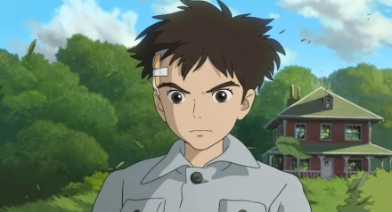
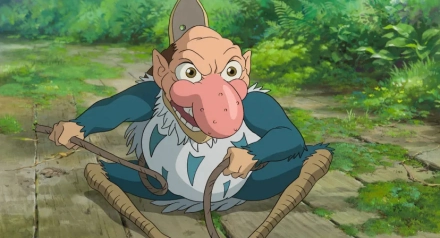
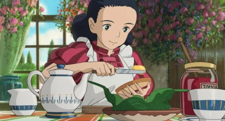
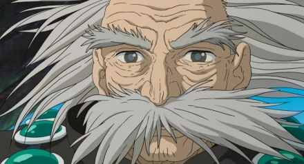

影片简介
《你想活出怎样的人生》（君たちはどう生きるか）是宫崎骏执导的2023年动画电影，改编自吉野源三郎的同名小说。这部作品被认为是宫崎骏的"人生总结之作"，讲述了一个少年在奇幻世界中的成长与自我发现之旅。
本片采用全手绘动画制作，是宫崎骏继《起风了》之后时隔10年的长篇动画作品，在全球范围内获得了极高的评价和票房成绩。
电影片段
怎样的人生.mp4" controls="controls">
观看《你想活出怎样的人生》的精彩片段，感受宫崎骏大师的收官之作。
剧情概述
故事发生在太平洋战争时期的日本，少年牧真人因母亲在空袭中丧生而随父亲搬到乡下。在那里，他遇到了一只神秘的苍鹭，被引导进入了一个充满奇幻生物和超自然现象的异世界。
在这个异世界中，真人遇到了各种象征性的人物和生物，包括代表母亲年轻时的火美、构筑异世界的太舅公等。通过这些经历，真人逐渐理解了生命的意义、战争的无情以及人性的复杂。
影片通过真人的视角，探讨了"人应该如何活着"这一永恒命题，展现了宫崎骏对生命、和平与人类命运的深刻思考。
主要角色

牧真人
本片主人公，12岁少年，因战争失去母亲，在奇幻世界中寻找生命的意义和自我认同。

苍鹭
引导真人进入异世界的神秘生物，外表是会说人话的苍鹭，性格狡猾但内心善良。

火美
真人在异世界遇到的少女，实际上是其母亲年轻时的样子，帮助真人理解生命的意义。

太舅公
"殿下"希望真人成为继承人，邀请他去了异世界。其原形是久子和夏子的大伯父，是靠着堆砌石堆构筑异世界的人物。